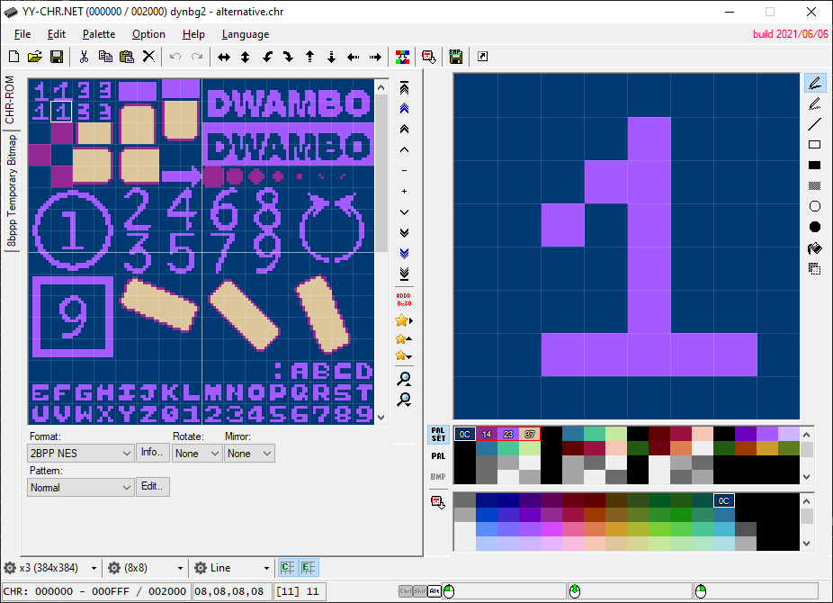
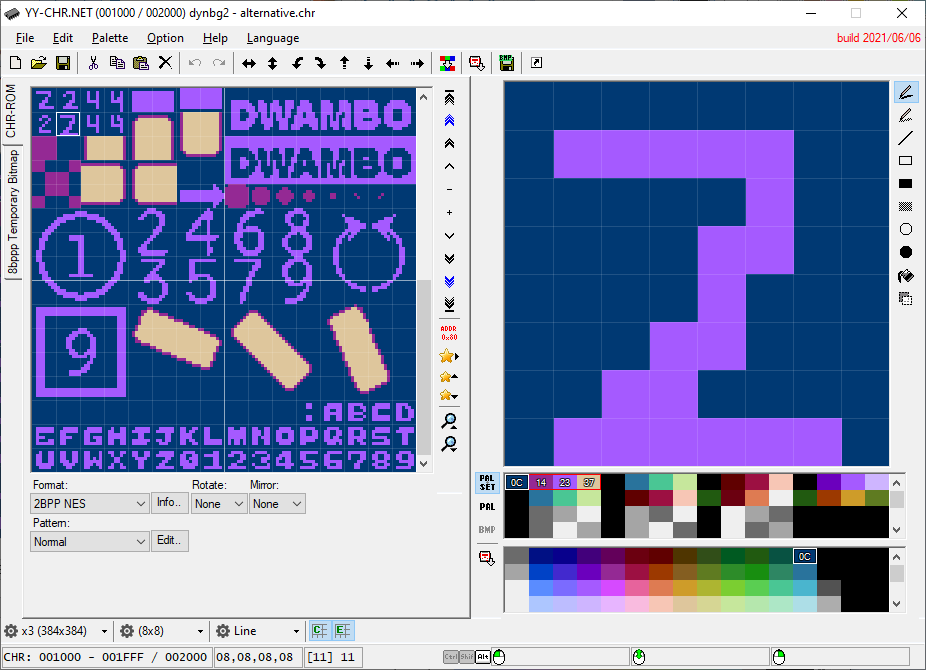
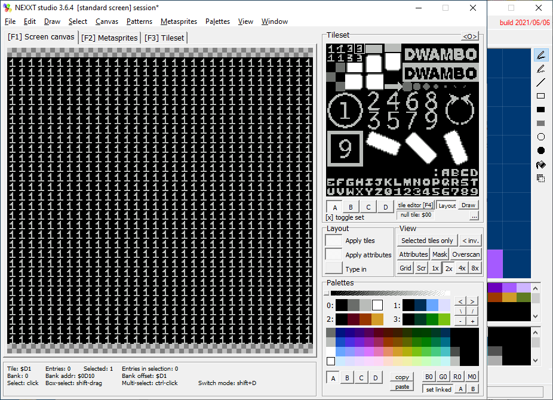
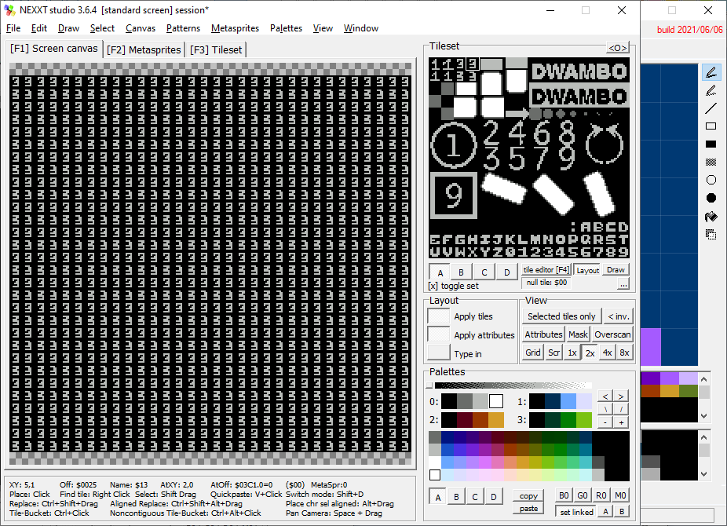

NESFab Tutorial - Dynamic Background in NROM
Limitations of the NES Background
As you already know, the NES is very limited about what you can do to the background. It wasn't engineered to have a dynamic background by itself, but there a few ways we can remedy that. You probably know this one: changing the CHR Bank in the middle of a VBlank. Changing the CHR Bank has the effect of changing the background on the fly at the cost of ROM size, but what if we don't want to inflate the ROM size? I'll show you one trick we can do in NROM.
// Snake enemies
struct Enemy
UU map_x
UU map_y
UU initial_x
UU final_x
S x_speed
U status // 0-alive 1-killed and falling 2-killed and off the screen
//
ct U level1_num_enemies=8
ct UU enemy_char_width=16
ct UU enemy_char_height=16
...
//enemies
Enemy[level1_num_enemies] enemies
Dynamic Background in NROM
In NROM we don't have CHR banks, so we'll have to settle with changing between the 2 CHR sets of the only CHR bank. Ok, that gives us 2 frames of animation, but, what if we need more? In this example I show you how to get 4 frames of background animation in NROM if your game only uses 1 screen. Indeed, if you don't need scrolling, you can reuse the extra screen in the scrolling space to get 2x2=4 frames of animation.
In the following images you can see that we have 2 sets of CHR. Tile 0 of Set 0 draws ones, and tile 0 of set 1, draws twos. Ok. Tile 1 of set 0 draws a three, and tile 1 of set 1, draws a four.


In the following images made in NEXXT, you can see that we have 2 screen, the first one is made of tile 0, and the second one is made of tile 1.


Our example uses horizontal mirroring. We write the first background screen to ADDR odfkkkkkkkkkkkkkkkkkkkkkkkkkkkkkkkk and the second BG screen to ADDR ddddddddddddddddddddddddddddd. We start displaying image1 CHR set 0.
- 1. We start with screen 1, BG CHR set 0, displaying ones.
- 2. We change the current background set to 1, which makes it display twos.
- 3. We change the current background set to 0, and the current background screen to the second screen, which makes it display threes.
- 4. We change the current background set to 1, which makes it display fours.
- Repeat.
NEXXT link dibujo de extra scrolling space GIF animado de resultado código de la demo en la pagina web link con el còdigo de la demo enlaces apuntando a nesdev con los registros a tocar